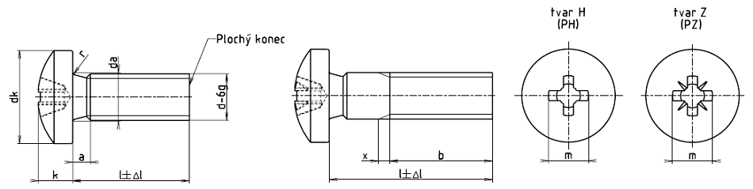

Příklad označení šroubu s půlkulatou hlavou se závitem M5, délky l = 20 mm, pevnostní třídy 4.8, s křížovou drážkou tvaru Z:
ŠROUB S PŮLKULATOU HLAVOU ISO 7045 – M5 ×20 – 4.8 –
| Závit | M1,6 | M2 | M2,5 | M3 | (M3,5) | M4 | M5 | M6 | M8 | M10 | ||
|---|---|---|---|---|---|---|---|---|---|---|---|---|
| rozteč P | 0,35 | 0,4 | 0,45 | 0,5 | 0,6 | 0,7 | 0,8 | 1 | 1,25 | 1,5 | ||
| amax. | 0,7 | 0,8 | 0,9 | 1 | 1,2 | 1,4 | 1,6 | 2 | 2,5 | 3 | ||
| bmin. | 25 | 25 | 25 | 25 | 38 | 38 | 38 | 38 | 38 | 38 | ||
| da max.1) | 2 | 2,6 | 3,1 | 3,6 | 4,1 | 4,7 | 5,7 | 6,8 | 9,2 | 11,2 | ||
| dk max. | 3,2 | 4,0 | 5,0 | 5,6 | 7,0 | 8,0 | 9,50 | 12,0 | 16,0 | 20,0 | ||
| dk min.1) | 2,9 | 3,7 | 4,7 | 5,3 | 6,64 | 7,64 | 9,14 | 11,57 | 15,57 | 19,48 | ||
| kmax. | 1,30 | 1,60 | 2,10 | 2,40 | 2,60 | 3,10 | 3,70 | 4,60 | 6,0 | 7,50 | ||
| kmin. | 1,16 | 1,46 | 1,96 | 2,26 | 2,46 | 2,92 | 3,52 | 4,3 | 5,7 | 7,14 | ||
| rmin | 0,1 | 0,1 | 0,1 | 0,1 | 0,1 | 0,2 | 0,2 | 0,25 | 0,4 | 0,4 | ||
| rf≈ | 2,5 | 3,2 | 4 | 5 | 6 | 6,5 | 8 | 10 | 13 | 16 | ||
| xmax. | 0,9 | 1 | 1,1 | 1,25 | 1,5 | 1,75 | 2 | 2,5 | 3,2 | 3,8 | ||
| Křížová drážka | Velikost křížové drážky | 0 | 1 | 2 | 3 | 4 | ||||||
| Tvar H | mpomocný rozměr | 1,7 | 1,9 | 2,7 | 3 | 3,9 | 4,4 | 4,9 | 6,9 | 9 | 10,1 | |
| hloubkamax. | 0,95 | 1,2 | 1,55 | 1,8 | 1,9 | 2,4 | 2,9 | 3,6 | 4,6 | 5,8 | ||
| hloubkamin. | 0,70 | 0,9 | 1,15 | 1,4 | 1,4 | 1,9 | 2,4 | 3,1 | 4,0 | 5,2 | ||
| Tvar Z | mpomocný rozměr | 1,6 | 2,10 | 2,6 | 2,8 | 3,9 | 4,3 | 4,7 | 6,7 | 8,8 | 9,9 | |
| hloubkamax. | 0,90 | 1,42 | 1,50 | 1,75 | 1,93 | 2,34 | 2,74 | 3,46 | 4,50 | 5,69 | ||
| hloubkamin. | 0,65 | 1,17 | 1,25 | 1,50 | 1,48 | 1,89 | 2,29 | 3,03 | 4,05 | 5,24 | ||
| Délka l |
Mezní úchylky ±Δl |
M1,6 | M2 | M2,5 | M3 | (M3,5) | M4 | M5 | M6 | M8 | M10 | ||
|---|---|---|---|---|---|---|---|---|---|---|---|---|---|
| Informativní hmotnost 1000 šroubů [kg] | |||||||||||||
| 3 | 0,20 | 0,099 | 0,178 | 0,338 | |||||||||
| 4 | 0,24 | 0,111 | 0,198 | 0,366 | 0,544 | ||||||||
| 5 | 0,24 | 0,123 | 0,215 | 0,398 | 0,588 | 0,89 | 1,90 | ||||||
| 6 | 0,24 | 0,134 | 0,233 | 0,425 | 0,632 | 0,95 | 1,38 | 2,39 | |||||
| 8 | 0,29 | 0,157 | 0,270 | 0,488 | 0,720 | 1,07 | 1,53 | 2,57 | 4,37* | ||||
| 10 | 0,29 | 0,180 | 0,307 | 0,546 | 0,808 | 1,19 | 1,69 | 2,561 | 4,22 | 9,96* | |||
| 12 | 0,35 | 0,203 | 0,344 | 0,606 | 0,896 | 1,31 | 1,84 | 3,68 | 5,07 | 10,1* | ** | ||
| 14 | 0,35 | 0,226 | 0,391* | 0,666* | 0,984* | 1,43 | 2,00 | 3,31 | 5,42 | 11,2 | ** | ||
| 16 | 0,35 | 0,245 | 0,418 | 0,726 | 1,070 | 1,55 | 2,15 | 3,56 | 5,78 | 11,9 | 21,8* | ||
| 20 | 0,42 | 0,492 | 0,846* | 1,250* | 1,79 | 2,46 | 4,05 | 6,46* | 13,2* | ** | |||
| 25 | 0,42 | 0,996* | 1,470* | 2,09* | 2,85* | 4,67* | 7,36* | 14,8 | 26,3* | ||||
| 30 | 0,42 | 1,690* | 2,39* | ** | 5,29* | 9,24* | ** | ** | |||||
| 35 | 0,50 | 2,68* | 3,62 | ** | ** | ** | ** | ||||||
| 40 | 0,50 | 4,01 | 6,52 | 10,0 | 19,6 | ** | |||||||
| 45 | 0,50 | 7,14 | 10,9 | 21,2 | 36,4 | ||||||||
| 50 | 0,50 | 11,8 | 22,8 | 38,9 | |||||||||
| 55 | 0,95 | 12,6 | 24,4 | 41,4 | |||||||||
| 60 | 0,95 | 13,5 | 26,0 | 43,9 | |||||||||
| Materiál | Oceli | Antikorozní oceli | Neželezné kovy | |
|---|---|---|---|---|
| Všeobecné požadavky | Mezinárodní norma | ISO 8992 | ||
| Mechanické vlastnosti | Pevnostní třída | 4.8, 5.8 | A2–50, A2–70 | — |
| Mezinárodní normy | ISO 898-1 | ISO 3506 | ISO 8839 | |
| Mezní rozměry, tolerance tvaru a polohy | Výrobní třída | A | ||
| Mezinárodní norma | ISO 4759-1 | |||
| Křížová drážka | Mezinárodní norma | ISO 4757 | ||
| Povrch | hladký Požadavky na elektrolyticky vyloučené povlaky viz ISO 4042. Jestliže je požadována jiná povrchová ochrana, musí být dohodnuta mezi dodavatelem a odběratelem. Mezní hodnoty povrchových vad viz ISO 6157-1 a ISO 6157-3 |
|||